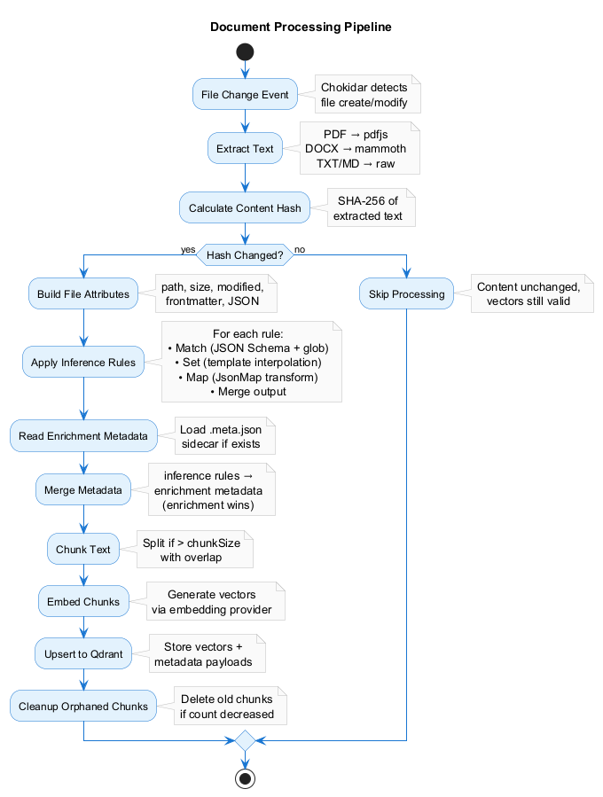
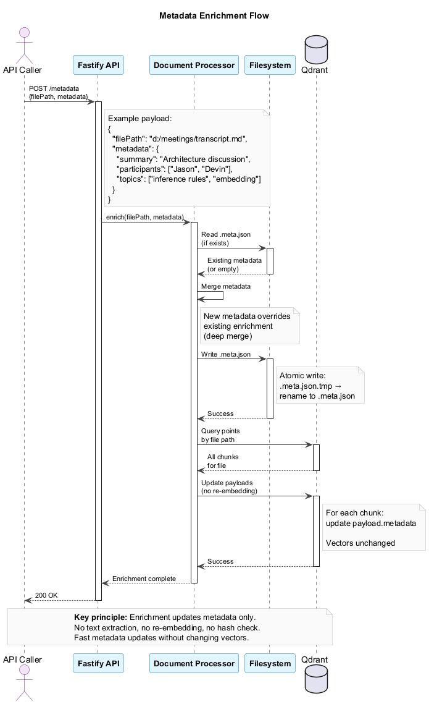

Architecture
High-level architectural overview of jeeves-watcher for contributors and advanced users.
Design Principles
- Files are just files — Processes write to the filesystem normally. The watcher discovers changes passively.
- Config-driven, no domain logic — The watcher doesn't know what an "email" or "meeting" is. Domain semantics live in config (inference rules).
- Embedding is swappable — Change embedding providers by changing one config line. No code changes.
- Metadata enrichment is optional — The watcher works without it, but callers can enrich documents for better search quality.
- Three sources of truth — Filesystem owns content, metadata store owns enrichment, Qdrant is a derived index (fully rebuildable).
System Architecture

The watcher consists of several layered components:
- Configuration Layer — Zod-validated config with environment variable substitution
- Watch Layer — Chokidar filesystem watcher + event queue
- Processing Layer — Document processor with extractors, chunking, and inference rules engine
- External Services — Configurable embedding provider + Qdrant vector store
- API Layer — Fastify HTTP server for enrichment and search
- CLI Layer — Command-line interface for operations
Three Sources of Truth

The system maintains three distinct stores:
- Filesystem (watched directories) — Primary source of document content
- Metadata Store (
.meta.jsonsidecars) — Enrichment metadata added via API - Qdrant (vector database) — Derived index, fully rebuildable
Rebuild Flows
Qdrant lost → Rebuild from filesystem + metadata store:
jeeves-watcher reindex
Reads files from disk, reads .meta.json sidecars, re-embeds content, upserts to Qdrant.
Metadata store lost → Rebuild from Qdrant:
jeeves-watcher rebuild-metadata
Scrolls Qdrant points, extracts enrichment metadata from payloads, writes .meta.json files.
Data Flow
1. File Change Event
graph LR
A[File Created/Modified] --> B[Chokidar Event]
B --> C[Debounce]
C --> D[Stability Check]
D --> E[Event Queue]
Debounce: Wait watch.debounceMs after the last change event (prevents re-embedding during rapid edits).
Stability Check: File size must be unchanged for watch.stabilityThresholdMs (prevents embedding partial writes).
2. Document Processing Pipeline

The core processing flow transforms file changes into searchable vectors:
- Extract Text — Format-specific extraction (PDF, DOCX, Markdown, etc.)
- Content Hash — SHA-256 hash of extracted text for change detection
- Hash Check — Skip re-embedding if content unchanged
- Build Attributes — Collect file metadata (path, size, modified, frontmatter, JSON)
- Apply Inference Rules — Match → Set → Map → Merge (see Inference Rules)
- Read Enrichment Metadata — Load
.meta.jsonsidecar if exists - Merge Metadata — Combine inference rules + enrichment (enrichment wins)
- Chunk Text — Split large documents with overlap
- Embed Chunks — Generate vectors via embedding provider
- Upsert to Qdrant — Store vectors + payloads
- Cleanup Orphaned Chunks — Remove old chunks if document shrunk
3. Metadata Enrichment (API)

The enrichment API allows external callers to add metadata without re-embedding:
- POST /metadata with file path and metadata
- Read existing
.meta.jsonsidecar (if exists) - Merge metadata — new metadata overrides existing (deep merge)
- Write
.meta.json— atomic write via temp file + rename - Update Qdrant payloads — modify all chunk payloads for the file
Key principle: Enrichment updates metadata only. No text extraction, no re-embedding, no hash check. Fast metadata updates without changing vectors.
4. Search Flow
graph TD
A[POST /search] --> B[Embed Query]
B --> C[Qdrant Cosine Search]
C --> D[Return Top Results]
Chunk deduplication: Search returns individual chunks. Callers group by file_path to get unique documents.
Chunking Strategy
Documents exceeding embedding.chunkSize (default: 1000 characters) are split into chunks.
Splitters:
- Markdown files (
.md,.markdown) —MarkdownTextSplitter(splits on heading boundaries, preserves structure) - All other files —
RecursiveCharacterTextSplitter(splits on\n\n, then\n, then., then characters)
Both splitters use:
chunkSize— max characters per chunkchunkOverlap— overlap between consecutive chunks (helps preserve context at boundaries)
Chunk Points:
Each chunk becomes a separate Qdrant point with:
- Unique ID:
pointId(filePath, chunkIndex)(deterministic UUID) - Shared payload:
file_path,domain, metadata (same across all chunks) - Chunk-specific:
chunk_index,total_chunks,chunk_text
Example:
File with 3 chunks → 3 Qdrant points:
| Point ID | chunk_index |
total_chunks |
chunk_text |
|---|---|---|---|
uuid-0 |
0 |
3 |
"First chunk..." |
uuid-1 |
1 |
3 |
"Second chunk..." |
uuid-2 |
2 |
3 |
"Third chunk..." |
Content Hashing
Every processed file gets a content hash (sha256 of extracted text) stored in the Qdrant payload.
On file modify events:
- Extract text
- Compute hash
- Query Qdrant for existing point
- If
content_hashmatches → skip (no re-embed, no API call) - If hash differs → re-embed and upsert
Benefits:
- Saves embedding API calls on cosmetic changes (whitespace, metadata-only edits)
- Prevents unnecessary Qdrant writes
- Speeds up reindex (only changed files are re-embedded)
Point ID Generation
Qdrant point IDs are deterministic UUIDs derived from file paths:
import { v5 as uuidv5 } from 'uuid';
const NAMESPACE = '6a6f686e-6761-6c74-2d6a-656576657321'; // fixed
function pointId(filePath: string, chunkIndex: number): string {
const normalized = filePath.toLowerCase().replace(/\\/g, '/');
return uuidv5(`${normalized}:${chunkIndex}`, NAMESPACE);
}
Why deterministic:
- Same file always produces the same ID
- No need to store ID anywhere — it's computable from the path
- Renames are a delete + insert (old ID removed, new ID created)
Trade-off: Renaming/moving files changes their identity in the index. Acceptable — the watcher handles it transparently.
Event Processing
Event Queue
File events are queued and processed sequentially to maintain consistency.
Concurrency: Embedding API calls are parallelized (up to embedding.concurrency), bounded by a rate limiter (embedding.rateLimitPerMinute).
Same-path serialization: Events for the same file path are always processed in order (prevents race conditions).
Startup Behavior
On service start:
- Scan all
watch.pathsglobs - Compare filesystem state against Qdrant (by point ID)
- Index new files (in filesystem but not Qdrant)
- Remove stale entries (in Qdrant but file no longer exists)
- Re-embed modified files (content hash mismatch)
This ensures consistency after service downtime or crashes.
Config Change Handling
When configWatch.enabled is true, the watcher monitors its own config file.
On config change:
- Debounce for
configWatch.debounceMs(default: 10 seconds) - Reload and validate config
- Recompile inference rules
- Queue a scoped metadata reindex (only files matching changed rules)
Scoped reindex:
- If a rule targeting
d:/meetings/**changes, only files underd:/meetings/are re-evaluated - No re-embedding — just metadata updates to Qdrant payloads
Pause/resume:
POST /config-reindex {"action": "pause"} # Suppress auto-reindex
POST /config-reindex {"action": "resume"} # Diff accumulated changes, single reindex
Metadata Store Design
Path Derivation
Metadata sidecars mirror the watched filesystem hierarchy:
File: D:\projects\readme.md
Sidecar: {metadataDir}/d/projects/readme.md.meta.json
Algorithm:
function metadataPath(filePath: string, metadataDir: string): string {
const normalized = filePath.replace(/^([A-Z]):/i, (_, d) => d.toLowerCase());
return path.join(metadataDir, normalized + '.meta.json');
}
Lookup: O(1) — fs.existsSync(metadataPath). No index required.
File Format
Each .meta.json contains only enrichment metadata (not content or embeddings):
{
"title": "Project Overview",
"labels": ["documentation", "important"],
"author": "jeeves",
"enriched_at": "2026-02-20T08:00:00Z"
}
Write Policy
The metadata store is watcher-owned. Only the watcher process writes to it, only via the POST /metadata API.
Enforcement: Architectural policy (no filesystem permissions, cross-platform consistency).
Inference Rules Engine
Rules are JSON Schema match + set actions, evaluated in order against file attributes.
Attributes:
{
"file": {
"path": "d:/meetings/2026-02-20/transcript.md",
"directory": "d:/meetings/2026-02-20",
"filename": "transcript.md",
"extension": ".md",
"sizeBytes": 4523,
"modified": "2026-02-20T08:15:00Z"
},
"frontmatter": { "title": "Meeting Notes", "author": "jeeves" },
"json": { "participants": ["Jason", "Devin"] }
}
Rule example:
{
"match": {
"properties": {
"file": {
"properties": {
"path": { "type": "string", "glob": "d:/meetings/**" }
}
}
}
},
"set": {
"domain": "meetings"
},
"map": "extractProject"
}
Processing order for each matching rule:
match— JSON Schema validation against file attributesset— Template interpolation (${...}) resolves against attributesmap— JsonMap transformation (inline or named reference)- Merge —
mapoutput overridessetoutput on field conflict
Custom glob format: Picomatch glob matching registered as an ajv custom keyword. This is the only custom format — everything else is pure JSON Schema.
Template interpolation in set:
{
"set": {
"title": "${frontmatter.title}",
"directory": "${file.directory}"
}
}
JsonMap transformations (map):
Rules can reference named maps from the top-level maps config, or include inline JsonMap definitions. The watcher provides lib functions for path manipulation: split, slice, join, toLowerCase, replace, get.
See Inference Rules Guide for full details.
Text Extraction
Extractors by File Type
| Extension | Extractor | Strategy |
|---|---|---|
.md, .markdown |
markdown |
Strip YAML frontmatter (extract as metadata), return body text |
.txt, .text |
plaintext |
Return as-is |
.json |
json-content |
Extract string values from known content fields (content, body, text, subject) |
.pdf |
pdf-parse |
Extract text via unpdf library |
.docx |
docx-extract |
Extract text via mammoth library |
.html, .htm |
html-to-text |
Strip tags via cheerio library |
Binary files without extractors (e.g., .png, .svg) are skipped — no embedding, no Qdrant entry.
Error Handling & Retry
Transient failures (Gemini API, Qdrant) are handled with exponential backoff:
| Failure Type | Retry Policy | Max Retries |
|---|---|---|
| Gemini 429 (rate limit) | Backoff from 1s, respect Retry-After |
5 |
| Gemini 500/503 | Backoff from 2s | 3 |
| Qdrant connection refused | Backoff from 5s | 10 |
| Text extraction error | No retry (log and skip) | 0 |
Dead-letter list: Files that fail all retries are moved to an in-memory dead-letter list (persisted to {metadataDir}/.dead-letter.json). Surfaced via GET /status and retried on next restart.
Graceful Shutdown
On SIGTERM/SIGINT:
- Stop accepting new filesystem events
- Drain current in-flight operations (wait up to
shutdownTimeoutMs) - Flush pending Qdrant writes
- Persist dead-letter list
- Exit cleanly
Partially processed files are safe — startup behavior re-processes them by comparing filesystem state against Qdrant.
Collection Bootstrap
On first startup, if the Qdrant collection doesn't exist, the watcher creates it:
await qdrant.createCollection(collectionName, {
vectors: {
size: config.embedding.dimensions,
distance: 'Cosine'
}
});
Dimension mismatch: If the collection exists with different dimensions (e.g., after switching embedding providers), the watcher logs an error and refuses to start.
Recovery: Delete the collection manually (or rename collectionName in config), then restart.
Logging
Structured JSON logging via pino:
| Level | Events |
|---|---|
info |
File indexed, file deleted, reindex started/completed, config reloaded |
warn |
Extraction failed, dead-letter entry, dimension mismatch |
error |
Embedding API failure (after retries), Qdrant write failure, startup failure |
debug |
Hash match (skip), debounce, queue depth, chunk processing |
Log format: JSON lines (parseable by standard log aggregators).
Technology Choices
| Component | Library | Rationale |
|---|---|---|
| Filesystem watcher | chokidar |
Cross-platform, glob support, battle-tested |
| HTTP framework | fastify |
Lightweight, fast, schema validation |
| Text splitting | @langchain/textsplitters |
Markdown-aware + recursive splitting |
| JSON Schema validation | ajv |
Fast, extensible (custom glob format) |
| Embedding client | Direct HTTP (Gemini REST API) | No SDK bloat |
| Qdrant client | @qdrant/js-client-rest |
Official client, typed |
| Logging | pino |
Structured JSON, low overhead |
Extending the Watcher
Add a New Extractor
- Implement extractor function in
src/extractors/index.ts:
async function extractYaml(filePath: string): Promise<ExtractionResult> {
const content = await fs.readFile(filePath, 'utf8');
const parsed = YAML.parse(content);
return {
text: JSON.stringify(parsed, null, 2),
frontmatter: undefined,
json: parsed
};
}
- Register in config:
{
"extractors": {
".yaml": "yaml-content"
}
}
Add a New Embedding Provider
- Implement provider in
src/embedding/index.ts:
class MyEmbeddingProvider implements EmbeddingProvider {
async embed(texts: string[]): Promise<number[][]> {
// Call your provider's API
}
}
- Register in factory:
export function createEmbeddingProvider(config: EmbeddingConfig): EmbeddingProvider {
if (config.provider === 'my-provider') return new MyEmbeddingProvider(config);
// ...
}
- Use in config:
{
"embedding": {
"provider": "my-provider",
"model": "my-model",
"apiKey": "${MY_API_KEY}"
}
}
Next Steps
- Configuration Reference — All config options
- Inference Rules Guide — Rules engine deep dive
- API Reference — HTTP endpoints
- Deployment Guide — Production setup